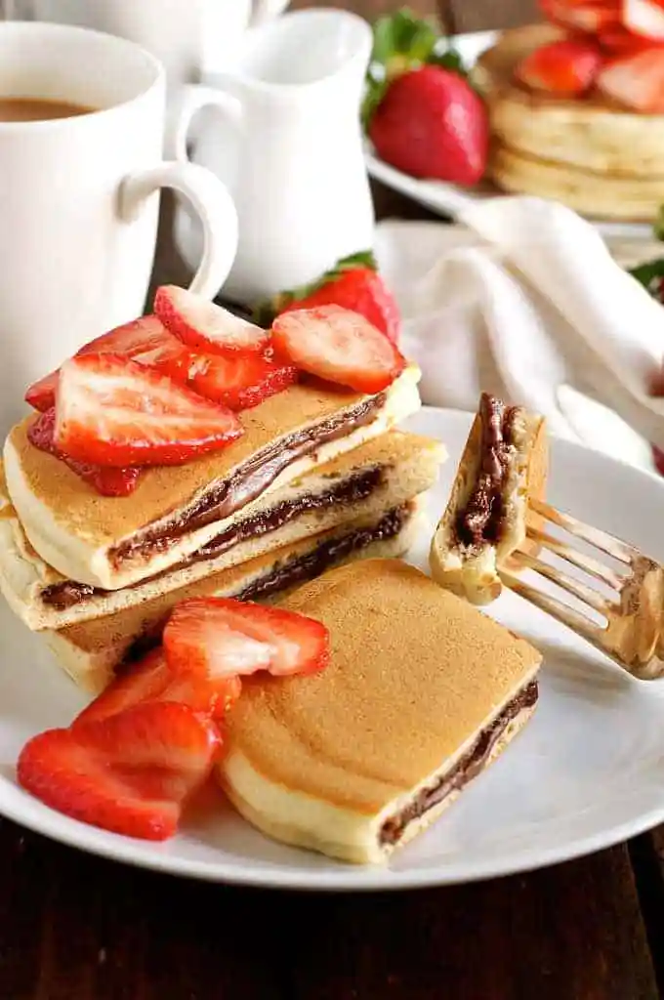

Home
Nutella stuffed pancakes

Description
This is an amazing recipe for making these incredible pancakes overflowing with delicious nutella.
Ingredients
- Dry ingredients
- 1 1/2 cups plain flour
- 3 tsp baking powder
- 4 tbsp sugar
- Pinch of salt
- Wet ingredients
- 1 egg
- 1 cup milk + 2 tbsp milk
- 1 tsp vanilla essence (optional)
- Other
- 10 - 14 tbsp Nutella
- 1 tsp butter (separated, 2 x 1/2 tsp)
- Sliced strawberries (optional)
Instructions
- Frozen nutella discs
- Line a baking tray with baking paper (parchment paper).
- Dollop 1 1/2 to 2 tbsp of Nutella onto the baking tray and spread into a disc around 2 1/2" / 6cm in diameter and 1/5" / 1/2 cm thick. Repeat to make 7 discs.
- Place the tray in the freezer until firm (around 1 to 1 1/2 hours).
- Peel off the parchment paper. Keep the Nutella discs in the freezer until required (they soften quickly).
- Pancakes
- Place the Dry Ingredients in a bowl and whisk to combine.
- Make a well in the centre and place the Wet Ingredients in the well. Whisk until combined and lump free (stop whisking as soon as it is smooth, don't over whisk).
- Melt 1/2 tsp butter in a non stick fry pan over medium heat. Once melted, wipe most of the butter off with a paper towel.
- Take 3 Frozen Nutella Discs out of the freezer just before you start cooking.
- Dollop 1/4 cup of batter into the fry pan. Working quickly, place 1 Frozen Nutella Disc in the middle of the batter, then top with batter to cover the Nutella disc.
- When bubbles start appearing around the edges (around 2 minutes), lift up the edge and make sure the underside is golden. Then flip and cook until the other side is golden.
- Repeat with remaining batter. Melt more butter in the pan after the 3rd or 4th pancake. You should be able to make 7 in total, but sometimes it makes 6 - depends on how much batter you use on top of the Nutella.
- Serve warm with sliced strawberries, if using. You could also serve with cream but I find that it's not necessary!
Source of recipe